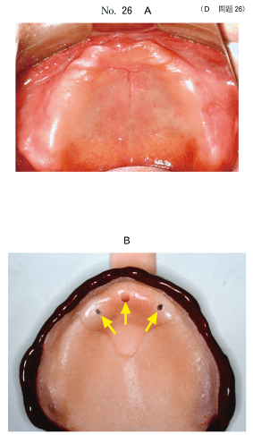
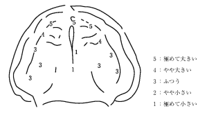
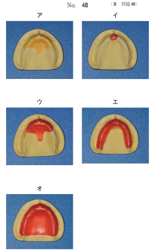
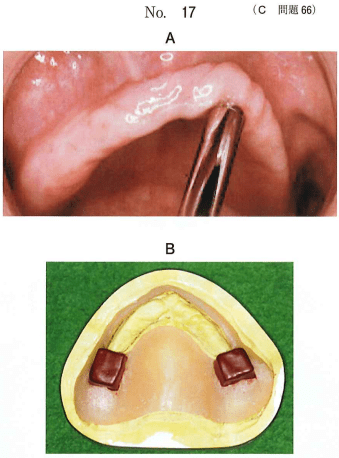
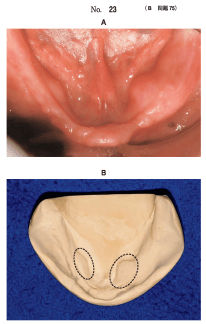
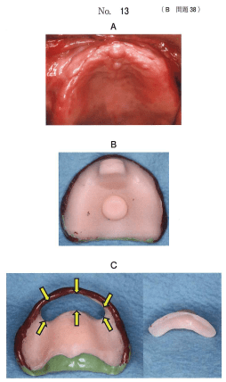

研究用模型上に、トレーの外形線、リリーフすべき範囲、ブロックアウトすべき範囲を表示する。
リリーフとは、被圧変位量の大きい部位や骨隆起部などに緩衝を付与すること。
| リリーフすべき部位 | 理由 |
|---|---|
| フラビーガム | 被圧変位量が大きい（変形しやすい） |
| 口蓋隆起・下顎隆起 | 被圧変位量が小さい（疼痛を生じやすい） |
| 頬舌骨筋線部 | 骨が表在し疼痛を生じやすい |
| ナイフエッジ状顎堤 | 鋭縁で疼痛を生じやすい |
| オトガイ孔部、切歯乳頭 | 神経・血管が存在 |
骨隆起部はシートワックス1〜2枚（0.2〜0.5mm）でリリーフする。
顎堤に著明なアンダーカットがある場合、サベイングした後、該当部をブロックアウトする。
トレーに穴を開けることで、印象圧を減少させることができる。
フラビーガム部に遁路を設けることで、その部位を無圧的に印象採得できる。
フラビーガム部に窓を開けた個人トレーを使用する。
窓の目的は顎堤粘膜の変形防止（フラビーガムを変形させない）
上顎後方の義歯床後縁部に付与し、後縁封鎖を図る。
70歳の男性。義歯の新製を希望して来院した。口腔内写真（別冊No.26A）と筋圧形成後の個人トレーの写真（別冊No.26B）とを別に示す。
矢印が示す構造の目的はどれか。1つ選べ。

【解説】矢印はトレーの穴（遁路・ストップ）を示している。穴を設けることで印象圧を減少させ、フラビーガム部などを無圧的に印象できる。
78歳の女性。全部床義歯を製作することとした。粘膜の被圧変位量の検査結果を図に示す。個人トレー製作のためのリリーフの状態（別冊No. 48）を別に示す。
リリーフの状態で正しいのはどれか。1つ選べ。


【解説】被圧変位量の大きい部位（フラビーガム）と小さい部位（骨隆起など）の両方にリリーフが必要。被圧変位量の検査結果に基づき、適切な部位にリリーフを付与する。
70歳の男性。上顎義歯の動揺と前歯部顎堤の疼痛を主訴として来院した。検査の結果、義歯を新製することとした。ミラーの柄を用いた顎堤粘膜の診査時の口腔内写真（別冊No.17A）と個人トレーの写真（別冊No.17B）を別に示す。
この個人トレーを用いる印象法の目的はどれか。2つ選べ。

【解説】写真はフラビーガムの診査と窓あきトレー。浮動性歯肉部（フラビーガム）は無圧状態で、正常粘膜部には咬合圧を加えて印象する。
64歳の女性。下顎全部床義歯の不適合による咀嚼困難を主訴として来院した。使用中の義歯は3年前に装着したという。検査の結果、下顎義歯を新製することとした。初診時の口腔内写真（別冊No.23A）と研究用模型の写真（別冊No.23B）を別に示す。
個人トレーの製作にあたり点線で囲んだ部位に行うのはどれか。2つ選べ。

【解説】点線部位は下顎隆起。下顎隆起にはリリーフの付与（被圧変位量が小さいため緩衝が必要）とアンダーカットのブロックアウトが必要。
79歳の女性。上顎義歯の不安定による咀嚼困難を主訴として来院した。義歯は15年前に装着したが、数年前から義歯の動揺を認めるようになったという。診察の結果、上顎義歯を製作することとした。初診時の口腔内写真（別冊No.13A）と個人トレーの写真（別冊No.13B、C）を別に示す。
矢印が示す構造の目的はどれか。1つ選べ。

【解説】矢印は窓あきトレーの窓（開口部）を示している。窓の目的は顎堤粘膜（フラビーガム）の変形防止。フラビーガム部を無圧で印象し、変形させないようにする。